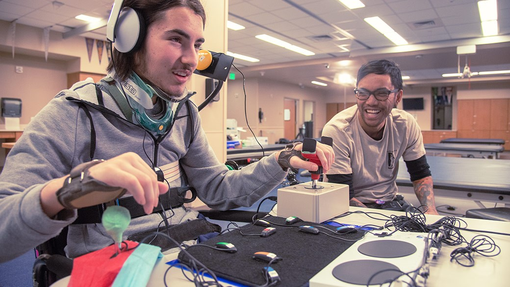

Ce site web est réalisé dans le cadre du cours d'intéractivité ART1213.
Le jeu vidéo, pour tous ?
Il est de plus en plus fréquent au 21ème siècle de se divertir à l’aide du jeu vidéo. Que ce soit des expériences solo ou multijoueur, il y a quelque chose pour tout le monde dans le dixième artSource : Qu'est-ce que le dixième art ? . Mais, à l’inverse, est-ce que le jeu vidéo est pour tout le monde? En effet, outre les goûts de tous et chacun, le jeu vidéo demande d’utiliser une méthode d’interaction afin de d’expérimenter le médium. En général, c’est la manette qui est mis en valeur ou le combo clavier-souris pour l’ordinateur. Ces outils conviennent pour une majorité de la population. En revanche, qu’en est-il pour les personnes ayant une limitation ?
C’est ici qu’entre en jeu l’accessibilité dans le jeu vidéo. Que ce soit pour une limitation sensorielle, moteur ou cognitive, nous explorerons les solutions offertes par l’industrie.
Quelles sont les solutions d'accessibilité offertes ?
 L'accessibilité dans les jeux vidéos. Crédit : Microsoft : Manette Xbox Adaptive (2021)
Malheureusement, il n’y a pas grand-chose que les développeurs font afin de rendre leurs jeux accessibles et c’est toujours du cas par cas. En général, on retrouve une option pour les daltoniens, leur permettant de changer les couleurs identifiants les ennemis ou simplement de changer les niveaux de couleur, luminosité, etc., par exemple. C’est le cas de League of Legends qui offre une section d’accessibilité relié à l’affichage, ainsi qu’un mode daltonien pour les ennemis. Heureusement, ces modes commencent à s’implémenter. Ensuite, il y a les rares jeux qui essaie de se rendre le plus accessible. C’est le cas de The Last of Us Part II qui, au grand bonheur de plusieurs, offre une pléthore de fonctionnalités. C’est plus de 60 réglages permettant, entre autres, de changer tous les boutons, l’utilisation mode de contrôle à une main, l’ajout des flèches aux sous-titres afin de connaitre la direction de provenance du bruit, grossir des éléments du UI, afficher les ennemis avec des couleurs vibrantes et plus encore. Ce titre de 2020 a su créer un nouveau précédent sur les fonctionnalités d’accessibilité à inclure, mais il y encore place à l’amélioration.
Du côté des manufacturiers, Sony avait déjà fourni un grand effort en 2015 afin de permettre le paramétrage des boutons de la manette directement dans le système, mais c’est Microsoft qui a su pousser plus loin avec la sortie, en 2018, de la Manette Xbox Adaptive. Cette manette est pensée pour le paramétrage afin de répondre aux besoins des limitations moteur. Elle offre, d’abord, une grande croix directionnelle ainsi que de très gros boutons A et B, mais c’est avec ces ports arrière qu’elle se démarque. Tous les boutons typiques d’une manette traditionnelle ont une prise afin de permettre l’utilisation de périphériques pour une personnalisation complète.
En conclusion
Aujourd’hui, de nouvelles technologies permettent d’analyser un grand nombre d’images et permettent ainsi d’apprendre à une intelligence artificielle de créer un nouvel exemple à partir de ces images.
Ce projet artistique vise à récolter les photographies des bustes de femmes françaises majeures et consentantes. Ayant pour but de créer, grâce à l’intelligence artificielle, la femme française représentative de l’ensemble de ces femmes, dans leur diversité autant que dans leur concordance. Le résultat ne ressemblera donc à aucune des photos récoltées, mais l’intelligence artificielle aura utilisé chaque photo pour la réalisation de l'œuvre finale.
Cette œuvre sera donc proposée comme candidate pour l’impression de la prochaine édition de timbres postes, le collectif souhaite également en offrir un exemplaire physique au Président de la République française.
Suggestion de visionnement
Sources
Accessibility in video games:a systematic review Aguado-Delgado, J., Gutiérrez-Martínez, JM., Hilera, J.R. et al. Accessibility in video games: a systematic review. Univ Access Inf Soc 19, 169–193 (2020). https://doi.org/10.1007/s10209-018-0628-2
Last of Us Part II: Is this the most accessible game ever? David Molly & Paul Carter. Last of Us Part II: Is this the most accessible game ever? (21 June 2020)
Pour l'image Microsoft. Manette Xbox Adaptive, 2021.